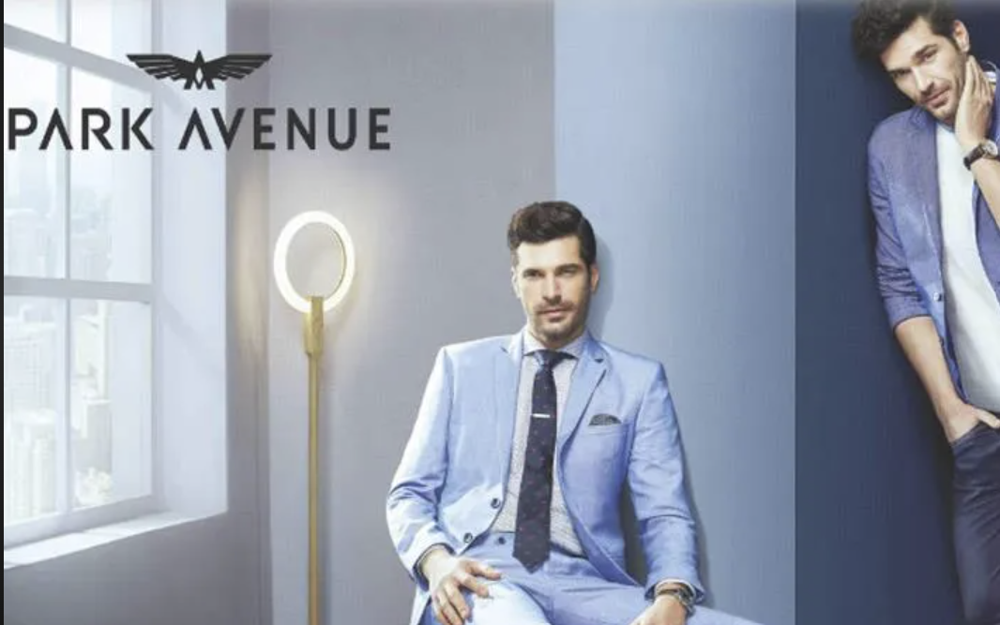

Data-led 4Ps strategy for a new Park Avenue menswear line.
SKU architecture, pricing, and channel mix built on Tableau-powered competitive analysis, so every recommendation had a number behind it.

Park Avenue: Raymond's premium menswear brand launching a new product line.
Park Avenue is Raymond Group's premium menswear label, operating across formal wear, smart casual, and occasion categories. The brand has a strong legacy in suits and formal shirts, with a retail presence spanning EBOs, MBOs, and department stores across India.
The brief was to develop a full 4Ps marketing strategy for a new menswear line, covering product architecture, price positioning, distribution channel mix, and promotional strategy, supported by competitive category analysis.
Entering a crowded premium menswear category with legacy positioning.
The premium menswear category in India had shifted significantly in the preceding five years. D2C entrants (House of Masaba, The Pant Project, Van Heusen MyFit) had captured the digital-native premium buyer. International fast-fashion (Zara, H&M) had commoditised smart-casual. Park Avenue's legacy positioning in formal wear was strong but narrow.
The new line needed to expand the brand's relevance without cannibalising existing formal wear equity, which meant finding a positioning whitespace that was credible for Park Avenue but not already owned by a faster, more digitally native competitor.
Build the competitive map first. Let the data define the whitespace.
I used Tableau to build a competitive benchmarking model across 12 premium menswear brands, plotting price point, channel mix, SKU depth, and perceived positioning on two axes: formality and brand modernity. The visualisation made the whitespace legible: a "elevated casual" segment priced Rs 2,500–5,000 per piece, distributed primarily through EBOs and curated e-commerce, where no strong incumbent existed.
The SKU architecture was built around three hero categories within that space: premium chinos, linen shirts, and occasion jackets, each with a defined price ladder (entry / hero / premium), seasonal depth, and colour palette governed by trend analysis.
The channel mix prioritised owned EBOs as the primary stocking point (brand experience control), with selective placement on Myntra and Ajio to capture digital discovery, and a deliberate pause on Flipkart and Amazon to avoid price erosion through third-party sellers.
A strategy with every recommendation traceable to data.
The deliverable was a complete marketing strategy document with the competitive Tableau analysis embedded, so every price point, every channel decision, and every SKU inclusion had a visible rationale. The approach made the strategy defensible in internal review and aligned the brand, commercial, and retail teams around a shared category view.
The "elevated casual" positioning also gave Park Avenue a clear answer to the question every legacy brand faces in a crowded market: where do we grow that our history makes credible and our competitors cannot easily follow?
Visualisation is a strategy tool, not a presentation tool.
The Tableau competitive map was built to help me think, not to present. The act of plotting 12 competitors on shared axes forced decisions about what dimensions of competition actually mattered, and revealed the whitespace more clearly than any amount of qualitative analysis could. When strategy work feels inconclusive, the question is usually: what is the right visualisation of this problem? Build that, and the answer tends to follow.